도시계획용도지역과 도시기본계획을 읽습니다
↓
부동산 금융땅의 지금 가격이 아니라 바뀔 수 있는 가치를 봅니다
시가화 예정용지, 용도 변경 가능성, 공간구조 재편 방향은 개발 사업성과 자산가치 전망의 출발점입니다.
근거 → 대전 2040 도시기본계획 분석, 춘천 토지이용계획숫자만 보는 분석은 입지를 놓치고, 공간만 보는 계획은 수익성을 놓칩니다. 저는 이 두 개를 모두 확보합니다.
시가화 예정용지, 용도 변경 가능성, 공간구조 재편 방향은 개발 사업성과 자산가치 전망의 출발점입니다.
근거 → 대전 2040 도시기본계획 분석, 춘천 토지이용계획같은 업무지구라도 문정은 채워지고 동탄 테크노밸리는 공실률 50~60%가 된 이유를 비교해 봤습니다.
근거 → 동탄 테크노밸리 연구계획, 래미안 퍼스티지 단지 분석GTX-A 개통 기대가 파주 집값에 준 영향, 공원 배치에 따라 달라지는 가격 프리미엄을 직접 분석했습니다.
근거 → 파주시 가격탄력성 실증분석, 도시공원 배치 패턴 연구자료를 누르면 원본 자료 감상이 가능합니다
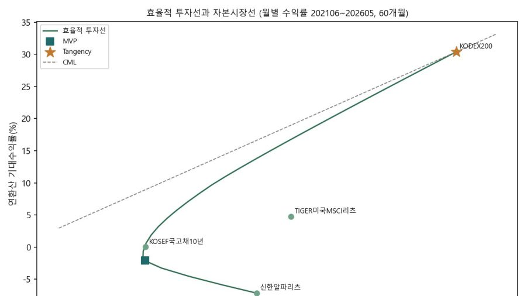
PDF★ 대표오피스 리츠 신한알파리츠를 가치평가, 금리 충격 시계열, 변동성(GARCH) 하방위험, 포트폴리오 최적화 네 가지 각도로 분석. 1,914거래일 시세와 한국은행 ECOS 123개월 거시 데이터를 직접 수집.
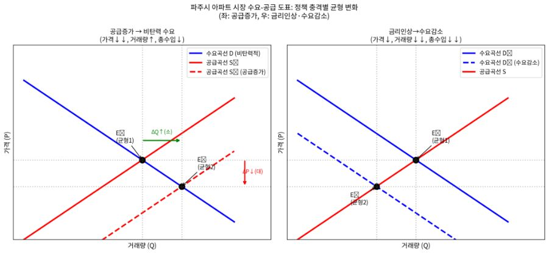
PDF★ 대표2020~2025년 파주시 아파트 실거래와 R-ONE 가격지수 72개월로 ‘밀 시장 탄력성 역설’이 주택시장에도 나타나는지 검증. 단기 비탄력·중장기 탄력의 이중 수요 구조를 확인.
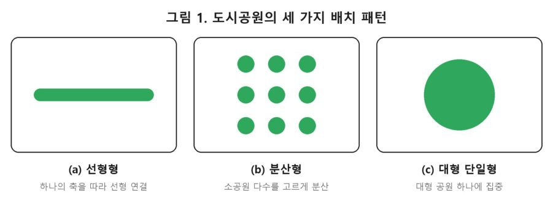
PDF★ 대표경의선숲길(선형)·마곡지구(분산)·서울숲(대형 단일) 세 배치 패턴이 주변 집값과 소득계층별 공원 접근성에 미치는 영향을 같은 틀로 비교하는 연구설계.
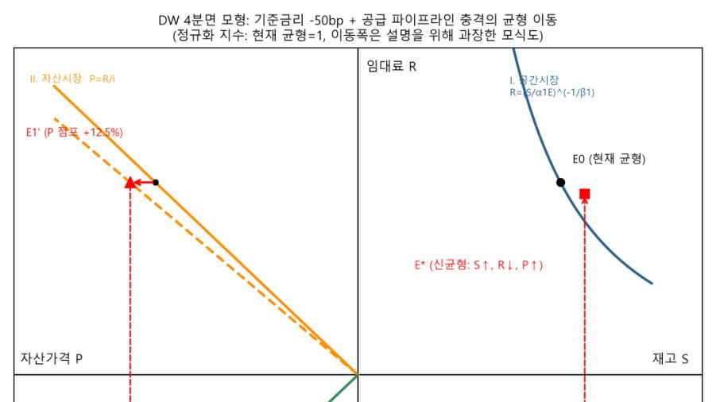
PDF효용함수 주거수요, 관리비 비용함수 회귀, DiPasquale–Wheaton 4분면 시뮬레이션, 토지거래허가구역 사건연구를 하나의 결론으로 연결.
미국 리츠 ETF와 국내 상장리츠의 변동성(EWMA·GARCH-t), VaR/CVaR, 금리 민감도 회귀, P/NAV 상대가치까지 9개 시트로 분석.
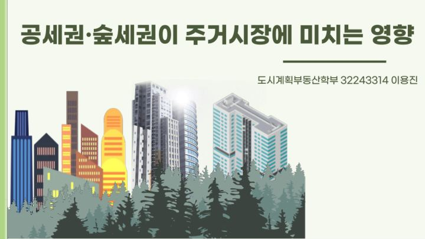
PDF공세권·숲세권의 개념과 선호 이유, 아파트 단지 내 녹지비율 증가와 가격 차이, 녹지 격차 문제까지 정리하고 내 생각을 더한 발표.
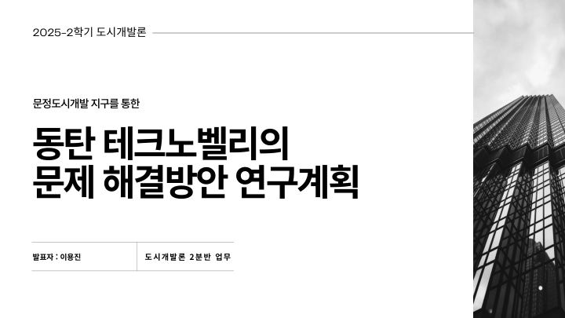
PDF공실이 심각한 동탄 테크노밸리를 법조단지 앵커시설과 입지로 성공한 문정 도시개발지구와 비교해 원인과 해법을 찾는 연구계획.
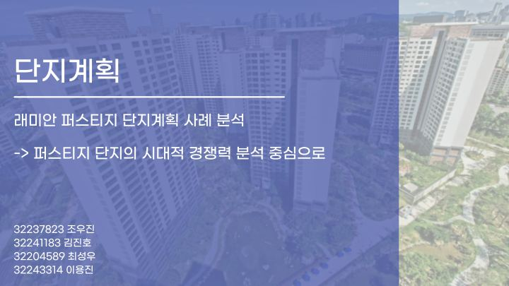
PDF2009년 당시 프리미엄 주거의 표준이던 래미안 퍼스티지가 15년이 지난 지금도 경쟁력이 있는지, 신축 단지와 비교해 단지계획의 시대적 경쟁력을 분석.
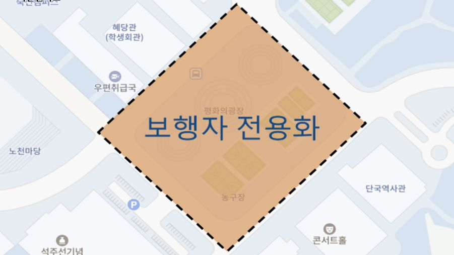
PDF랜드마크 부재와 가파른 오르막 문제를 진단하고, 평화의 광장 보행자 전용화와 지하도로, GTX 구성역과 이어지는 후문 통학버스를 제안.
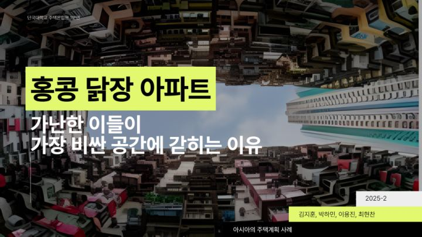
PDF홍콩의 도시 특성과 고밀 주거의 형성 배경, 주거시장의 구조적 문제, 고밀 주거 사례와 미래 개발 계획을 분석.
자료 보기 ↗춘천역과 하중도(레고랜드) 사이 35만㎡ 부지를 SWOT 분석한 뒤, 데이터센터·박물관·주상복합·수변공원을 배치한 토지이용계획.
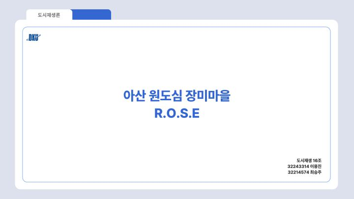
PDF유흥업소 밀집지였던 아산 장미마을을 대상으로, 과거를 지우지 않고 재해석하는 도시재생 전략과 핵심 인프라, 국내외 사례, 정책 제언을 정리.
자료 보기 ↗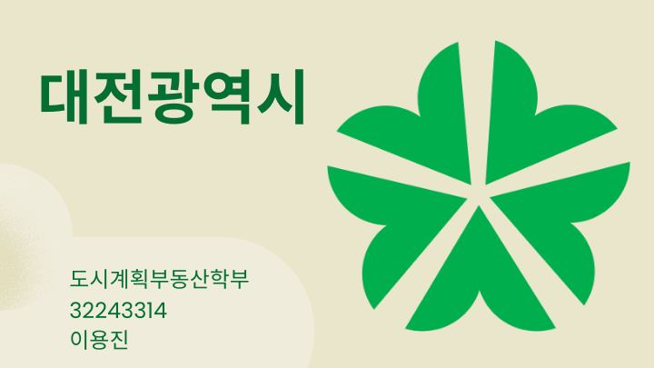
PDF대전의 역사·지리·산업 구조를 살피고, 2040 대전도시기본계획의 공간구조(3도심·2특화거점·4관문거점)와 토지이용계획을 분석.
150~1,500ft 저고도 도심 상공 사고의 딜레마를 정의하고, 초고속 전개·다중 배열 낙하산 등 탑승자 생명을 최우선으로 한 대응 방안을 구상.
자료 보기 ↗코딩 비전공자로서 AI와 대화하며 기획·디자인·배포까지 직접 완성한 개인 포트폴리오 웹사이트.
자료 보기 ↗인턴, 프로젝트, 커피챗 모두 환영합니다. 편한 방법으로 연락주세요.

휴대폰 카메라로 찍으면 이 포트폴리오가 바로 열립니다.
휴대폰 카메라로 찍으면 이름·전화·이메일이 주소록에 저장됩니다.